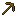

木镐
Wooden Pickaxe
所属标签
#amendments:goes_in_tripwire_hook#c:tools#eternal_starlight:stranghoul_can_use#forge:tools#kaleidoscope_cookery:ingredient_blocklist#minecraft:breaks_decorated_pots#minecraft:cluster_max_harvestables#minecraft:enchantable/durability#minecraft:enchantable/mining#minecraft:enchantable/mining_loot#minecraft:enchantable/vanishing#minecraft:pickaxes
获取方式
战利品箱 (1)
minecraft:chests/spawn_bonus_chest
钓鱼 (1)
tide:gameplay/fishing/junk_underground